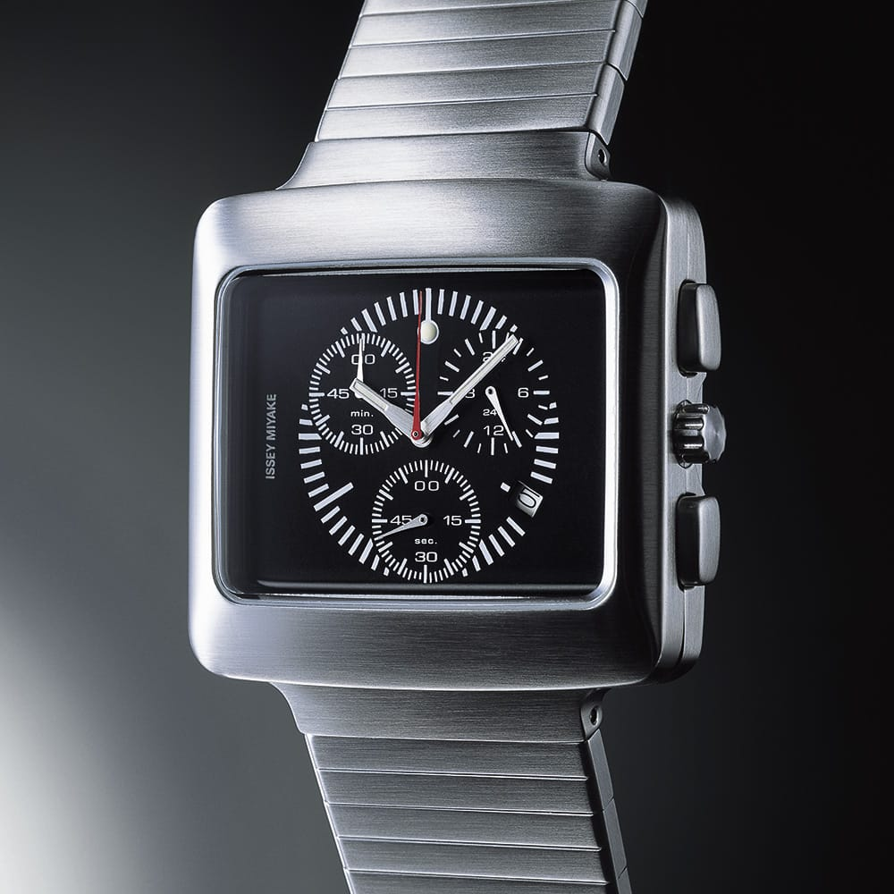
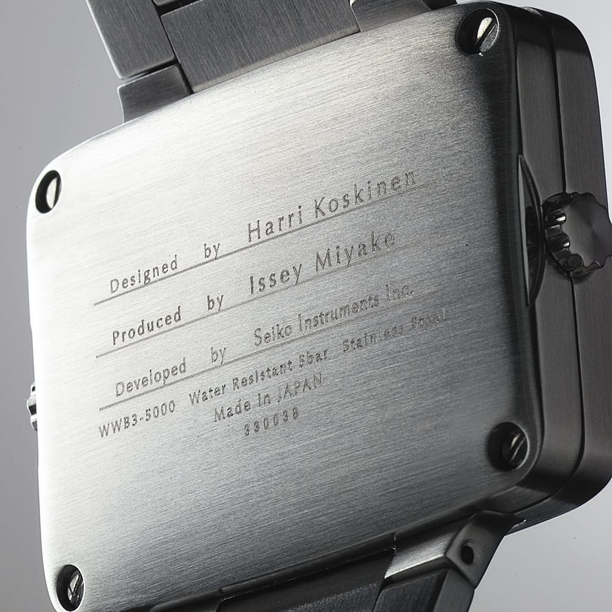
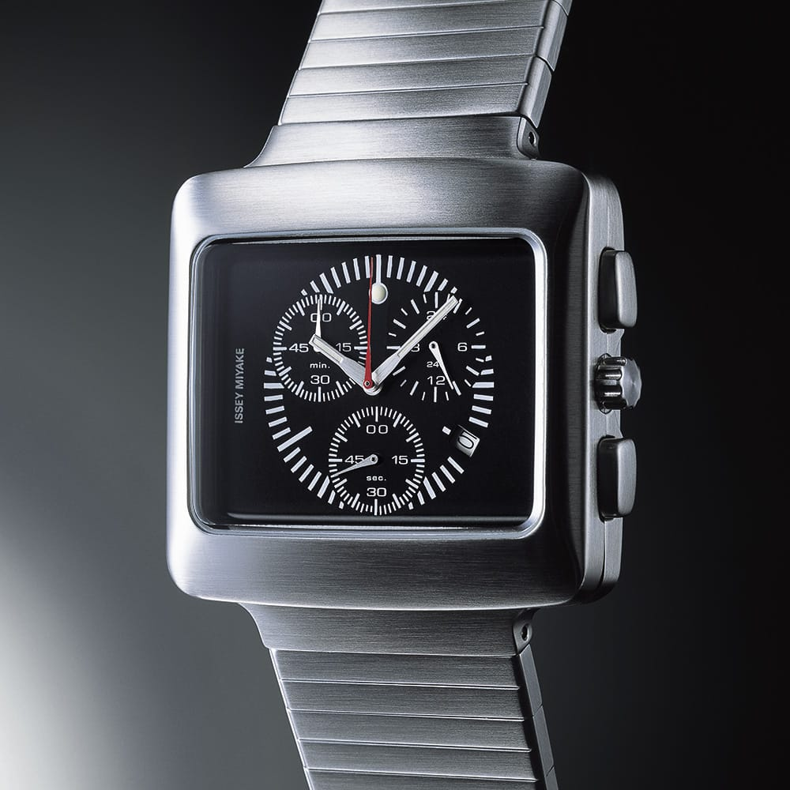
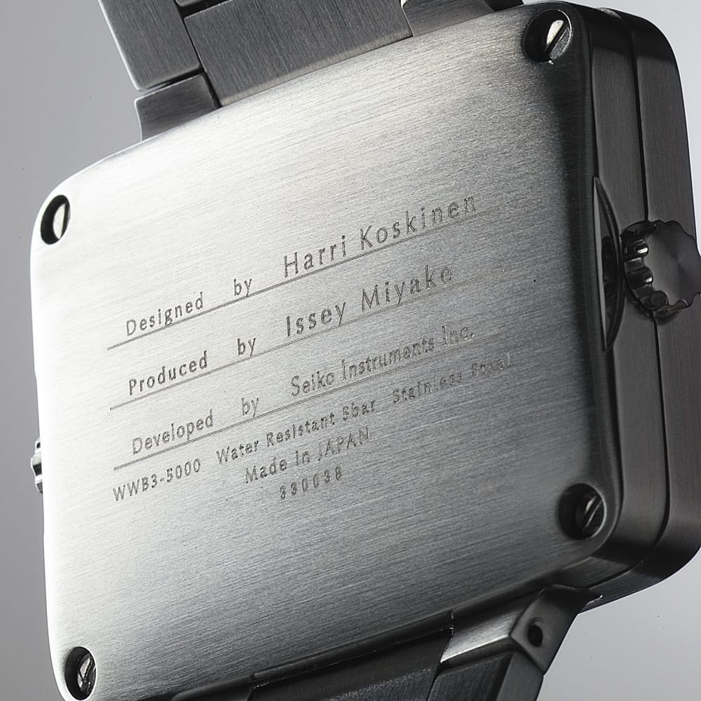

Tok Tok

Kio decided to talk to Harri.
Harri Koskinen is from Karstula, Middle-Finland. First he studied in Lahti design institute and then in Helsinki School of Arts which is nowadays Aalto University. He did a lot of practical projects in Aalto University. He was very keen to learn by doing. It felt right for him instead of sitting on the school bench.
What are some important things for a young designer to consider when making their portfolio?
Be sharp and precise, if you feature collaborations please clearly state what is your contribution. Show the fundamentals of projects and their process.
How did you decide your career path?
I was always a creative mind, and was pushed by my high school art teachers...
How did you get started in your first job after school?
During high school and at Lahti design institute I always did summer work. When I was in University I was invited by iittala to work for them.
What is important for a designer to consider when establishing their career path?
You need to work long days, be curious and creative both in research and process.
Looking back to when you graduated from school, what's one thing you know now that you wish you knew then?
Don’t hurry with the projects, complete them with a high bar for quality.
What is your most favorite project / product you have designed / taken part in?
Building up my first solo exhibition by invitation of Issey Miyake in Tokyo 2000.
Did the image of being a designer stay the same when you actually started to design as a career?
More or less. Teamwork and good people is the key to success.
 


